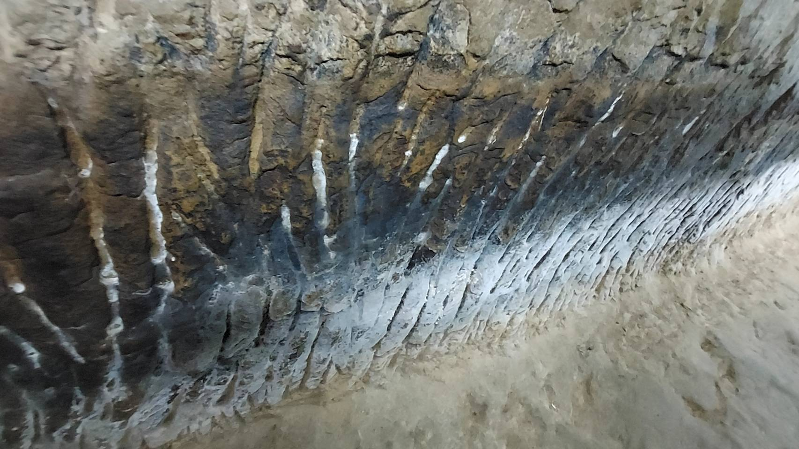
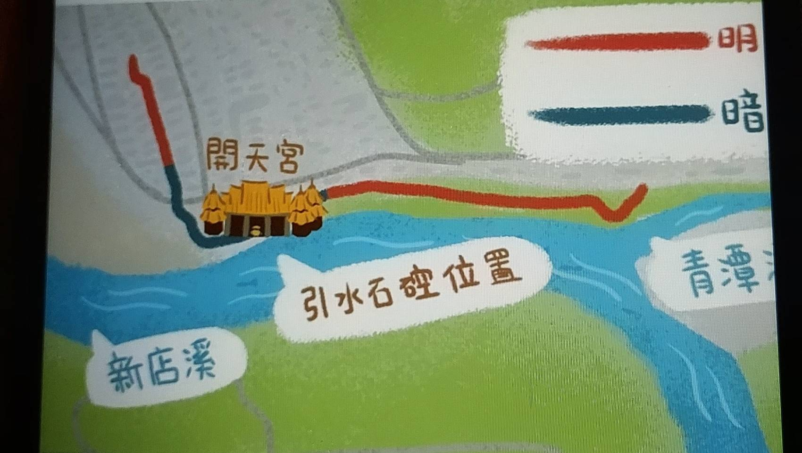
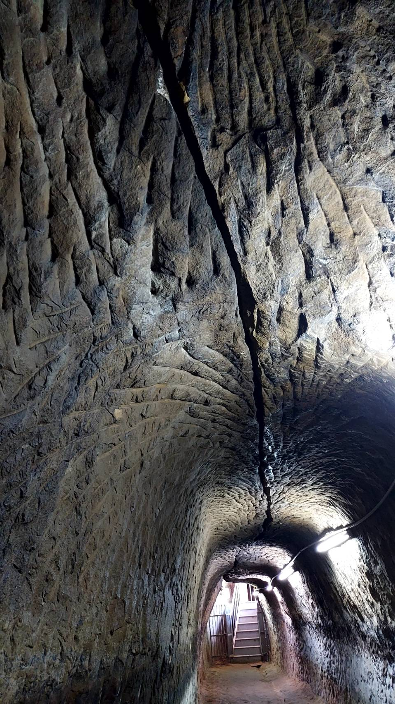

引水石硿
一手持槍、一手石硿 的艱辛引水歷史
文/Becky Chang
跟隨崇光社大走讀「用河川閱讀歷史」時，在開天宮休息，因為社大的緣故有幸再次進入石硿參觀。親自站在石硿內部，深深地感受到當年開鑿渠道時的辛苦——漆黑幽深的洞穴中，至今仍能清晰看見昔日墾荒人用極其原始的工具，一斧一鋤、槌打搥擊所鑿出的深邃石痕。
在這座擁有超過 250 年歷史的瑠公圳引水石硿內部，因為地下水經年累月的滲透與沖刷，岩壁表面已經形成了一道道色澤特殊的白色碳酸鈣結晶痕跡，凝結成時光的斑駁印記。而這段承載了無數故事的引水道，目前在新店後街的幽暗巷弄中，依然留有局部的明溝圳路供人指認憑弔。
引水石硿之由來：「引水石硿」（或稱「一邊石硿、一邊喝水/引水」），是早期台灣漢人移民在開鑿水圳與拓墾時，非常經典且驚心動魄的歷史寫照。雖然在文獻口耳相傳中，這類情境常被概括用來形容整個台北盆地邊緣的艱苦開墾，但最精準、最核心的歷史發生地，指的就是瑠公圳（以及緊密相連的大坪林圳）的源頭——新店青潭口與碧潭一帶。

一、 衝突的背景：深入「番界」的引水工程
清乾隆四年（1739年），墾戶郭錫瑠（瑠公）為了灌溉台北市區（當時的興雅庄、大安、松山一帶）的農田，決定尋找穩定的水源。他發現新店溪上游的水流最適合，於是率領佃農前往新店溪上游的青潭溪口（今新店青潭）開鑿大圳。
然而，當時的新店與烏來山區是泰雅族人的傳統活動與狩獵範圍。對泰雅族人而言，漢人成群結隊、帶著工具深入山林並強行「改變地貌」，無異於侵犯了祖靈聖地與生存空間，雙方隨即爆發長期的武裝競爭。
二、 「引水石硿」的真實戰況
由於原漢雙方文化巨大差異與生存競爭，開圳工程從一開始就伴隨著極為強烈的武裝衝突。當時「一邊挖圳、一邊防守」的真實寫照包括：
- 防禦建築與銃眼： 為了防範泰雅族的突襲，工程人員在工區與居住周邊修築了具有防禦功能的石壘、土牆，並鑿出「銃眼」（用來架火槍瞄準防禦的孔洞）。
- 武裝開墾的日常： 當時開鑿水圳的佃農與工匠，不能只是單純的勞工，每個人都必須具備戰鬥能力。在挖掘水道、搬運石頭時，火槍（鳥銃）必須隨身攜帶、甚至直接架在身旁。
- 「持槍飲水」的意象： 漢人移工在溪邊喝水或引水灌溉時，必須時刻保持警戒，隨時準備拿起武器反擊。這種「飲水、灌溉都要持槍防備」的緊繃狀態，成了那個時代新店溪畔拓墾最鮮明的歷史烙印。

三、 付出慘痛代價與關鍵轉折
這段「石硿開圳」的歷史極其漫長且血腥。郭錫瑠在青潭口斷斷續續挖掘了十幾年，因為地勢無比險峻，加上猛烈的出草反擊，工人死傷極為慘重，工程幾乎陷入停擺，郭錫瑠也因此花光了所有家產。為了化解衝突，他甚至曾與泰雅族女子通婚，試圖透過聯姻建立和平關係，但成效依然有限。
乾隆十八年（1753年），郭錫瑠因資金與人力難以為繼，轉而與大坪林墾首蕭妙興等人締約，將青潭口的工程股權讓出，改由大坪林五庄佃人組成的「金合興」號接手。接手的漢人採取了更為系統化的武裝與談和手段，歷經 11 年的浴血奮戰，終於在乾隆二十五年（1760年）鑿通了著名的「石硿引水古隧道」，成功引水。而郭錫瑠則改從稍下游、大坪林庄旁的「碧潭」重新設埤引水，歷經其子郭元芬的接續修築，才完成了灌溉大台北的瑠公圳幹線。

四、 歷史的遺跡與後人的想念
這段「石硿防守、艱苦開墾」的歷史，後來在日治時期（1903年）政府為了掌控樟腦利益與治理山區，進一步沿著新店山脊線（如獅仔頭山）修築了「隘勇線」與防番磚石寮。至今，在新店山區仍留有防番碑、銃眼與隘寮殘跡，它們與靜靜流淌的瑠公圳頭互為歷史的見證，記錄著兩百多年前，漢人移民在「飲水持槍」的極端環境下，與原住民發生激烈碰撞並改變台北盆地地貌的開拓史。
佇立於新店引水石硿前，指尖撫過那鑿痕斑駁的石壁，才真正讀懂了百年前墾拓者與命運搏鬥的史詩。那是一場拿生命當作籌碼的豪賭，每一寸渠道的開鑿，都浸透了先民在荒煙蔓草間，為了引水灌溉所付出的血汗與堅韌。
然而，比怪石嶙峋更難鑿穿的，是潛伏於密林深處的未知恐懼。彼時的風聲鶴唳、原漢衝突的「出草」陰影，如一柄懸在頸側的利刃，讓每一次揮鎬都伴隨著驚心動魄的戰慄。這一方石腔，不僅凝聚了水利工程的遠見，更是一座無聲的歷史紀念碑，銘刻著先民在生死一線間，用驚恐與剛毅澆灌出的、對生存最渴望的謳歌。